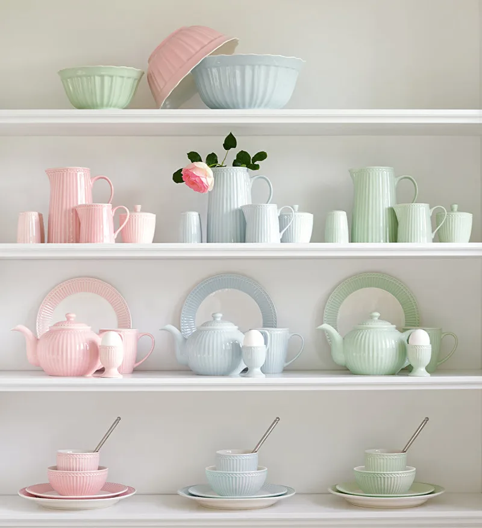
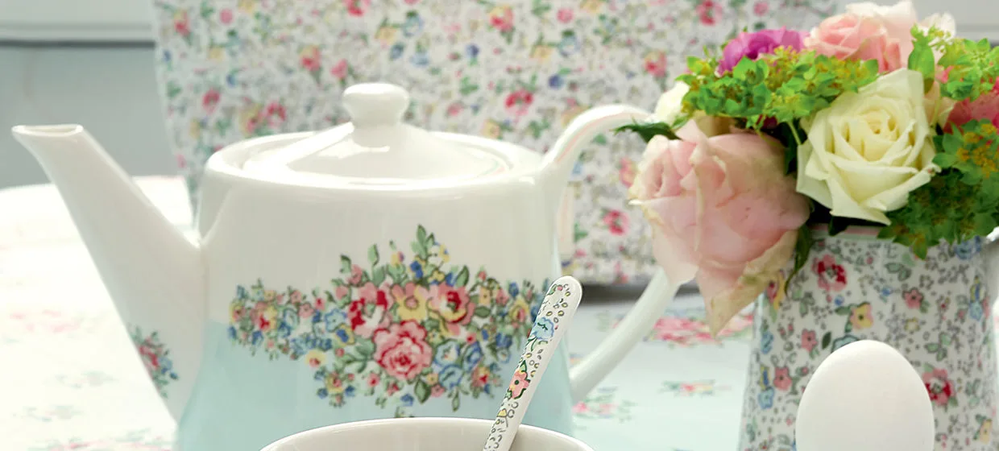
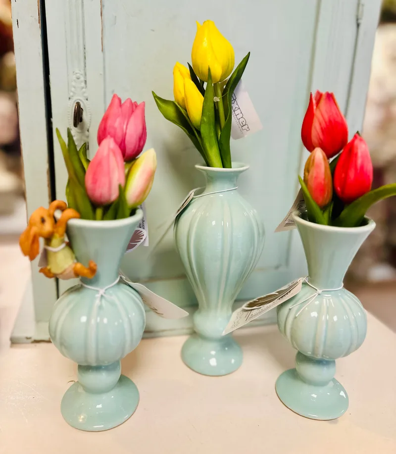
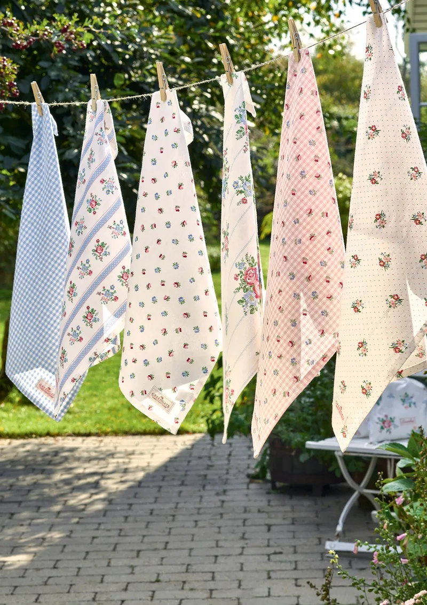
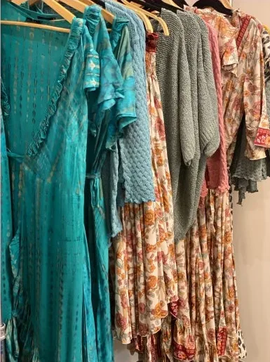
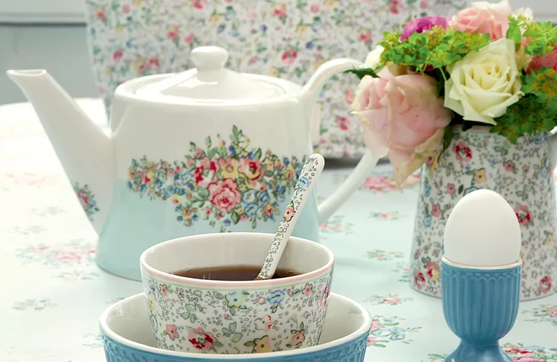
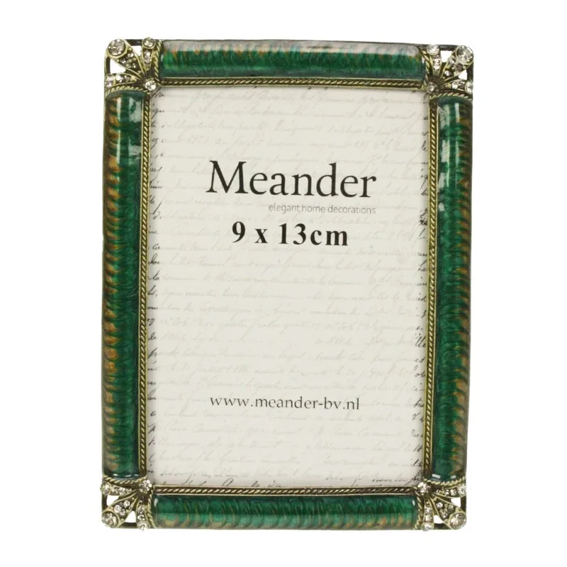
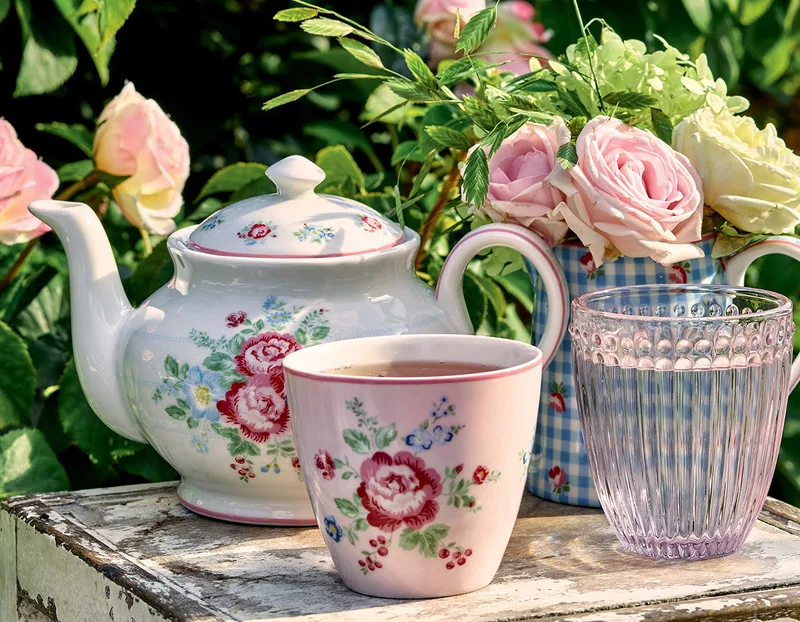

Servies & tafelen
Bekers, borden, kannen, kommen en glaswerk. Vrolijke bloemdessins, zachte pasteltinten en alles voor een gedekte tafel.

For everyday moments in life
Kleding, kadootjes, woonaccessoires en decoraties — om aan iemand anders te geven of voor jezelf te nemen. Je vindt me in Geleen.
Bij mij in de winkel staat van alles door elkaar: servies met bloemen, zachte theedoeken, kandelaars en fotolijstjes, kleding en accessoires. Geen strak schap met één merk, maar een winkel waar je even rond moet kijken — en waar je bijna altijd iets vindt.
Ik zoek alles zelf uit. Wat ik mooi vind, komt in de winkel. De collectie wisselt dus met de seizoenen en met wat ik tegenkom. Loop gerust binnen; kijken mag zonder kopen.
Groetjes, Mila

De collectie wisselt met de seizoenen. Dit zijn de vaste thema's.

Bekers, borden, kannen, kommen en glaswerk. Vrolijke bloemdessins, zachte pasteltinten en alles voor een gedekte tafel.

Vaasjes, kandelaars, fotolijstjes en ornamenten. De kleine dingen die een kamer af maken, en die het hele jaar mee wisselen.

Theedoeken, tafellopers, servetten, kussens en quilts. Katoen met bloemen, ruitjes en stipjes — om je tafel of bank mee op te fleuren.

Comfortabele kleding in natuurlijke stoffen, met sjaals, tassen en riemen erbij. Kleuren die je makkelijk met elkaar combineert.
Onder meer van deze merken:




De winkel zit aan de Raadhuisstraat, tegenover Berden. Even rondkijken mag altijd — je hoeft niets te kopen.
Buiten de openingstijden kun je een afspraak maken. Dan is de winkel alleen voor jou en je gezelschap open — handig als je iets zoekt voor een cadeau, of gewoon graag op je gemak kijkt.
Stuur me een berichtje met wanneer het je uitkomt, dan plannen we het in.